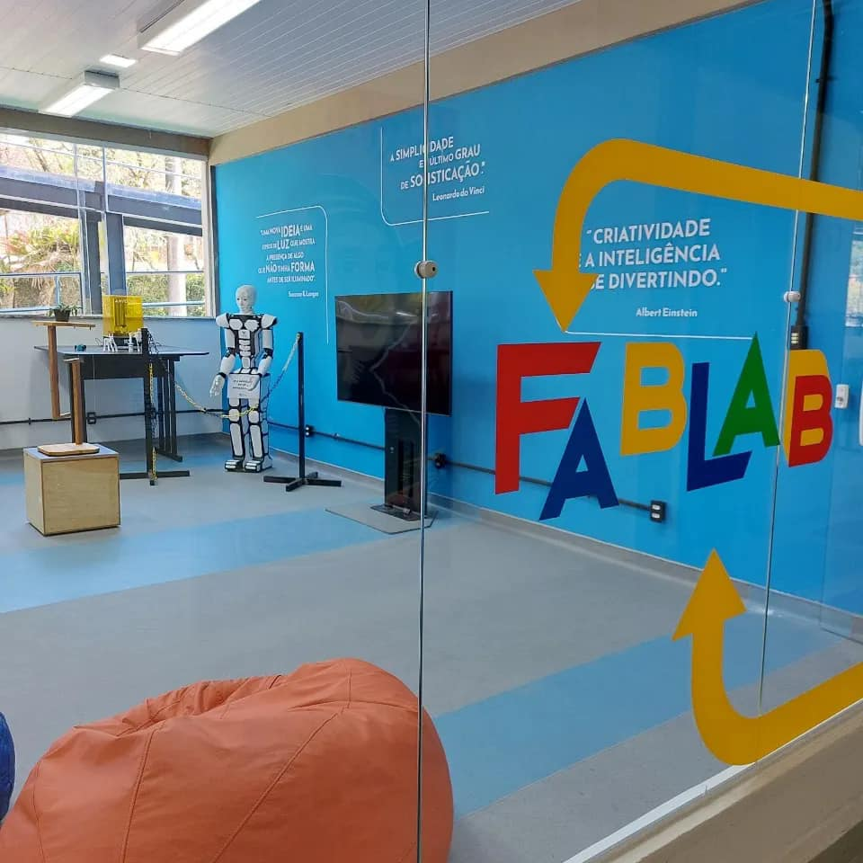

-


CALENDARIO 2022.2
8 horas atrásCalendario Academico 2021- 2° Semestre
-

ALUNOS EXCEDENTES
4 horas atrásLISTA DOS ALUNOS EXCEDENTES APÓS O DE/PARA 2021/2.
-
GRADE 2022.2
1 hora atrásGRADE E HORARIOS FAETERJ 2022.2
-

ATLETICA-FAETERJ
1 hora atrásVenha fazer parte da nossa Atletica
-
DE PARA
4 horas atrásde para esta oficialmente aberto.
-
Serratec
1 hora atrásAULA INAUGURAL SERRATEC